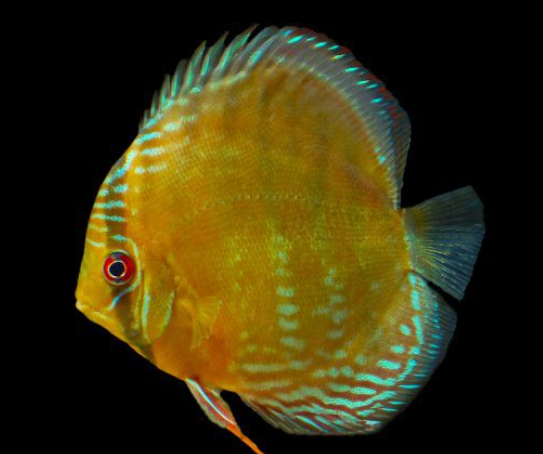
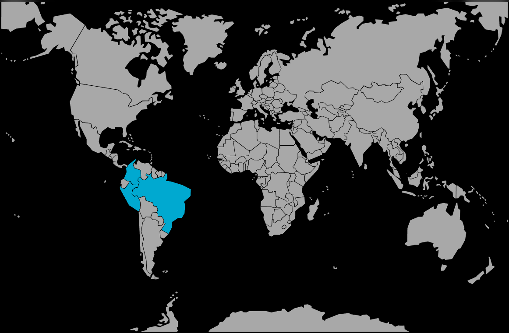

Systématique
- Ordre : Cichliformes
- Famille : Cichlidae
- Genre : Symphysodon
- Espèce : S. aequifasciatus

Symphysodon aequifasciatus, universellement connu sous le nom de Discus, est souvent qualifié de "Roi de l'aquarium" en raison de sa majesté et de ses couleurs spectaculaires.
C'est un grand cichlidé au corps discoïdal très compressé latéralement, atteignant 15 à 20 cm de diamètre. À l'état sauvage, on distingue trois variétés principales basées sur la coloration (brun, bleu, vert). En captivité, des décennies de sélection ont produit des centaines de morphes aux couleurs éclatantes (Pigeon Blood, Marlboro Red, Blue Diamond, Snake Skin, etc.).
C'est un poisson délicat qui ne pardonne pas les erreurs de maintenance, notamment concernant la qualité de l'eau et la température.
C'est un poisson grégaire et social qui a un besoin absolu de vivre en groupe (banc) d'au moins 5 à 6 individus. Une hiérarchie s'installe au sein du groupe, parfois avec quelques bousculades, mais sans violence excessive si l'espace est suffisant.
Il est calme, lent et majestueux dans ses mouvements, mais peut se montrer très timide et stressé s'il n'y a pas assez de cachettes ou si l'agitation autour du bac est trop importante. Il ne supporte pas la cohabitation avec des poissons trop vifs ou agressifs.
Mode : ovipare (pondeur sur substrat découvert).
La reproduction du Discus est unique chez les poissons. Le couple nettoie un support vertical (racine, feuille, cône de ponte) et y dépose les œufs. Ils protègent la ponte farouchement.
À l'éclosion, les alevins se nourrissent d'un mucus nutritif sécrété par la peau des deux parents (souvent appelé "lait de discus"). Sans ce premier nourrissage parental, les alevins ne survivent généralement pas, ce qui rend l'élevage artificiel extrêmement complexe.
Dimorphisme sexuel : Très difficile à identifier en dehors de la période de reproduction. Lors de la ponte, la papille génitale de la femelle est plus large et arrondie, celle du mâle plus fine et pointue. Certains mâles âgés peuvent présenter un front légèrement plus bossu.
Espérance de vie : Longue, entre 10 et 15 ans dans de bonnes conditions.
Il est originaire du bassin de l'Amazone (Brésil, Pérou, Colombie). Il fréquente les eaux calmes ("igarapés") et les zones de forêts inondées, au milieu des racines d'arbres immergés qui lui servent de refuge. L'eau y est généralement très chaude, très douce et acide.
Répartition

Origine naturelle :
- Amérique du Sud (Bassin Amazonien).
- Brésil (Rios Negro, Madeira, Tapajós, etc.).
- Pérou (Rio Nanay).
- Colombie.
Paramètres de maintenance
Température : 28 à 32 °C (Impératif : c'est un poisson d'eau très chaude, son métabolisme ralentit dangereusement en dessous de 28°C).
pH : 4,5 à 7,0 (4,5-6,0 pour les sauvages ; jusqu'à 7,0-7,2 pour les hybrides d'élevage).
GH : 1 à 10 °dGH (eau douce).
Pollution : Tolérance zéro aux nitrates et aux nitrites. Changements d'eau fréquents obligatoires.
Volume conseillé : Minimum 350 à 450 L pour un petit groupe. Une hauteur d'eau de 60 cm est recommandée.
Régime alimentaire
Régime : carnivore à tendance omnivore.
Nécessite une alimentation riche et fréquente (plusieurs fois par jour).
La base de l'alimentation en captivité est souvent constituée de "pâtée pour discus" (mélange à base de cœur de bœuf ou de dinde, crevettes, épinards), complétée par des granulés de haute qualité et du congelé (artémias, vers de vase).